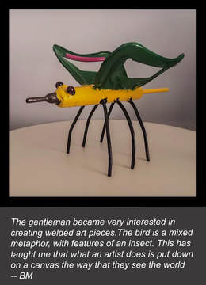

|
"A brain scan may reveal the neural signs of anxiety, but a Kokoschka painting, or a Schiele self-portrait, reveals what an anxiety state really feels like. Both perspectives are necessary if we are to fully grasp the nature of the mind, yet they are rarely brought together". -- Eric Kandel Visual art can provide a glimpse into people’s consciousness. It works as a bridge, not only connecting us to each other, but also with the past, present, and future. The act of creating art is also therapeutic, and represents a powerful resource for mental and physical well-being. Yet, the mechanisms underlying the brain’s capacity to generate art remains largely elusive. While it has been commonly reported that the right brain (posterior parietal and posterior temporal) is dominant for artistic ability, emerging literature strongly indicates that the left brain is not a silent partner. Instead, it contributes to more of the symbolic/conceptual aspects of art. Moreover, the emergence of visual artistic skills in the healthy brain has been linked to plasticity in areas (in both hemispheres) responsible for cognitive processes. Which begs the question: how is visual artistic creativity affected by neurodegeneration? In fact, art in the context of neurodegenerative diseases (e.g. Alzheimer’s disease, frontotemporal dementia) provides a unique window into brain anatomy and function. In this interview, I discuss the link between neurodegeneration and art with Bruce Miller, director of the Memory and Aging Centre at the University of California. Bruce also oversees the unique Hellman Visiting Artist Program, created to foster dialogue between scientists, caregivers, patients, clinicians and the public regarding creativity and the brain. Q&A WITH BRUCE MILLER AmanPreet Badhwar (AB): Can you begin by saying something about your background? Bruce Miller (BM): I am a behavioural neurologist at the University of California, San Francisco. I focus a lot on degenerative disease: the clinical presentation, differential diagnosis of dementia, also deep dive into frontotemporal dementia. I think a lot about behavioral phenomena, particularly early in the course of these diseases. I started realizing the importance of art and dementia very serendipitously. It was based on seeing a single patient (Jack). The son told me his father has become an artist in the setting of the illness. And I said “of course as the disease has progressed his work has gotten worse”, and he said “oh no it has gotten better”. So he sent me a series of pictures, and I was fascinated and really enchanted by the work that he did, and began to look in detail into the visual artistic process in that patient. Jack was preoccupied with creating purple and yellow art pieces, and a phrase I often heard from him was “ yellow and purple wave over me”. I did not think it was a coincidence, although many people around me thought it was, and I was stubborn enough to pursue this, and continued to look for it in my frontotemporal dementia and progressive aphasia population. It does not take much time to hear about somebody, who they are, what they do etc. I would argue that this should be a mandatory part of any evaluation.  AB: How do the worlds of neuroscience and art combine? BM: Art is unique to the human species. Other animals don’t spontaneously produce art and even our predecessors like the neanderthals and homo erectus made art. There are records of very sophisticated and complex cave paintings by homo sapiens that showed animals, had three-dimensional components and colours. So we developed this ability spontaneously, and without much formal teaching. The sense is that there is something really unique that happened, there was a change in the human brain, maybe a change in human circumstances that lead to this flourishing of art, and this continues to be a part of our ancient and modern societies. Also looking at the human output around art: some people are extraordinary, and some never produce art. So I think art is a very interesting aspect of humanity and a very interesting aspect of the human brain, and that the two things cannot be more connected. AB: You previously stated that “creativity is one characteristic that has been observed to improve with time, both in healthy older adults and people with age-related neurodegenerative disease”. Is the trajectory for artistic creativity different in normal aging and in age-related dementias? BM: I think it’s a very interesting, complex question, tackling aging of humans and art. We are very interested in elder artists, there is no doubt about it. Picasso was in his eighties, he produced very different but interesting pieces, but they delighted people. There is no doubt that his work was exciting. Was it better when he was young, or was it more innovative, maybe not, but I think there is great variability in when an artist reaches his or her peak. Some artists may have a series of observations that become very important in their twenties, and don’t change very much over time, and in others there is a constant evolution. I think one thing that is clear is that it takes a while to master whatever artform that someone is working at, nobody picks up a pen and produces a perfect sketch of a face, it takes many, many iterations and practise over many times. I think this is what happens when someone is an art student, they are constantly working on these techniques, making their own observations and getting observations on their work made by teachers. In disease, people who have never painted, made sculptures, or welded art pieces, suddenly become very interested in the process. Their first works are usually not as good as the ones they produce after they've had the chance to work at a specific media. They do things over and over again, and at some point they start to reach a mastery of their art. So I think there is often a period when they don’t produce something very interesting but there is a drive to do so. That drive pushes them to practise more and more and they reach some sort of a peak, until eventually the degenerative process and injury to circuits causes a loss of their abilities. So we have this very beautiful but sad story of sometimes art heralding the onset of the degenerative disease process. Soon after the art has appeared the degenerative process gets worse, and eventually the ability to produce art is lost altogether. AB: Do you think that this drive to produce art arises from disinhibition of certain brain networks, especially in patients who, earlier in their history, were never motivated to produce art? In other words is this artistic ability unveiled and perpetuated by the neurodegenerative process itself? BM: I do. I think the fact that they never produced art before means that the circuits involved in this process had not been activated. Something about the degeneration, for reasons that we don’t completely understand, leads to an interest, an activation, an actual physical drive to carry out the artistic activities. The theme has been that degeneration on the left side of the brain (language based regions) releases functions on the right side, which are more visual. AB: Have there been any fMRI studies done in these patients with relation to newly developed artistic abilities? BM: There is quite a bit of fMRI data that we have collected on our artists. We are in the process of analysing that, but we don’t yet have a coherent story. We wrote about it. William Seeley did these analyses on a woman (Anne Adams) who became a visual artist in the setting of a non-fluent aphasia, and she showed on a blood flow scan increased activity in the right posterior brain region, and actually during that time an MRI was done and she had increased volume in that same area. There are a number of theories, one being she was always like that (that is the bigger volume). But she was never much of an artist until the progressive aphasia emerged. We think there might have been slow remodeling in the early stages of the disease, with decreased activity in the left frontal insular regions allowing increased activity on the right posterior parietal area and actually some increase in volume.
AB: Does art created by people with brain disease or damage provide insight into brain anatomy and function? Could you provide a few examples? BM: Surely Anne Adams was a paradigm shift for me to describe the phenomenon of art and dementia, but I had never really thought too much about the mechanism. But because she had undergone an MRI just before the onset of dementia, this really allowed us to look into the circuitry and mechanism. This also allowed me to broaden my thoughts about the topic, so seeing patients who had gardens with beautiful details, flowers, patterns. This is another form of visual creativity that I have become aware of. AB: As a practising neurologist, how has your encounter with art influenced or changed your own conception about how the brain functions? Do you have specific examples? Did you have to overcome difficulties to promote this field? BM: I think it has really humanised my approach to patients. It makes me realize that even though dementia is a relentless process, there are many pockets of preservation, and sometimes enhanced function. It is critically important that we recognize this in our patients. It is helpful in diagnosis. What is preserved is telling us something about where in the brain the bad molecules are not accumulating. But it also allows us to think about the patients, about things that are important to them, and help design programs for them and have activities that are meaningful. If you have lost your visual spatial function profoundly, then probably working in art is not going to be satisfying. But if instead there are other areas that are preserved around music or singing or something else, these things have to be kept in mind while thinking about the future for the patient and their families. I think this should be a routine part of our diagnostic process, that is not only what are the weaknesses, but what are the strengths, and has anything new emerged that is actually a new strength. We do this regularly now at UCSF (it has opened up a whole new side to the evaluation). This also makes me appreciate the unbelievable effort that every patient that we see is putting into their life. When blocked in certain domains, they activate others and use others. So I think about patients in a very different way since the story of art emerged. I think, to a fault, neurologists have often thought about deficits a lot, without really seeing the whole human being, and I think this has really forced me in a very good way to think about the entire human within the ecosystem that they live and interact with others, and some of the things they perceive that might be very important. AB: I have had the good fortune of discussing both art and neurodegeneration on various occasions with Bruce. Not only do Bruce and I share similar scientific curiosities with regards to art and dementia, I have also found him to be an excellent mentor. He has taught me to follow my heart in the quest to figuring out the brain, and for this I shall be forever grateful! “I think the next philosophers, the philosophers of the 21st century, are going to be neuroscientists.” - Bruce Miller
0 Comments
Your comment will be posted after it is approved.
Leave a Reply. |
BLOG HOME
Archives
October 2022
|
 RSS Feed
RSS Feed